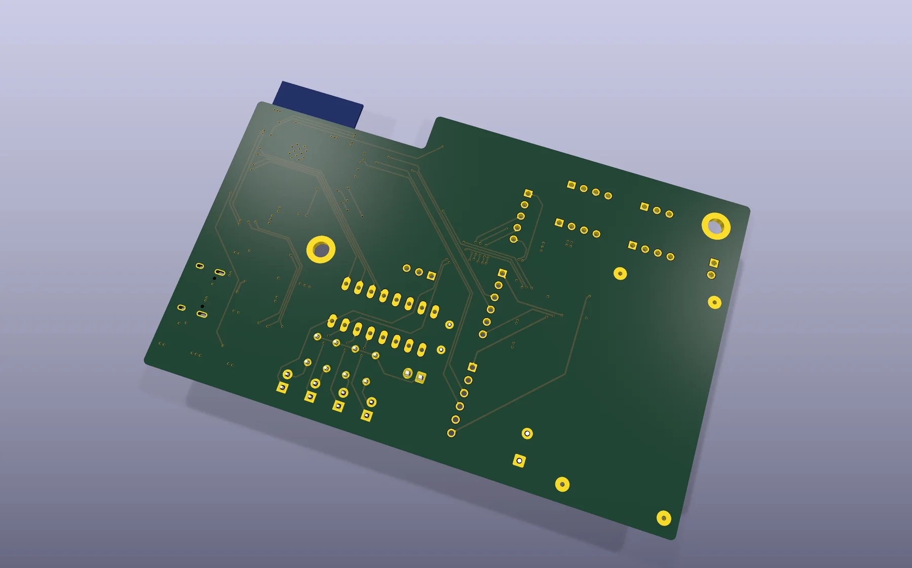
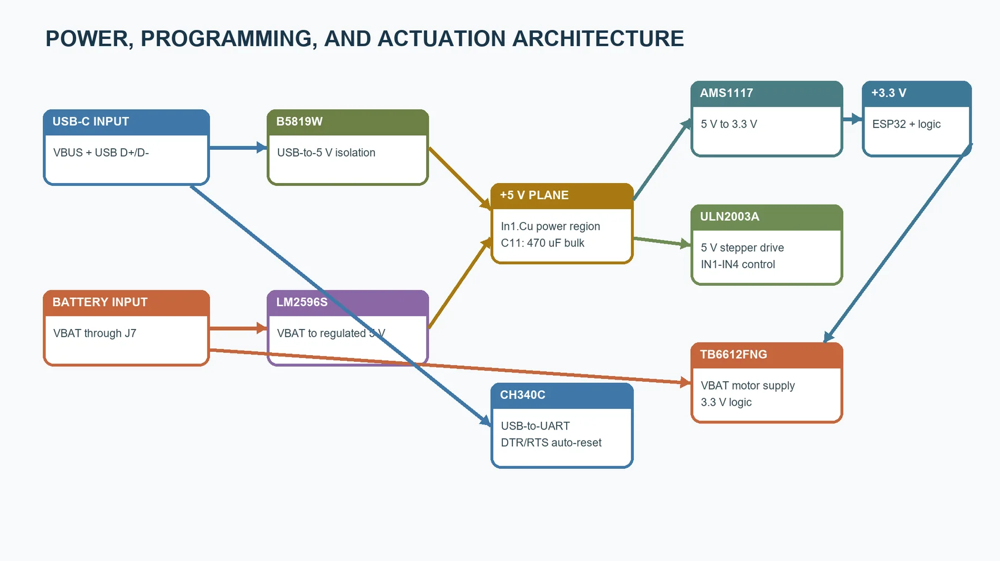
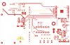
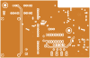
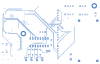
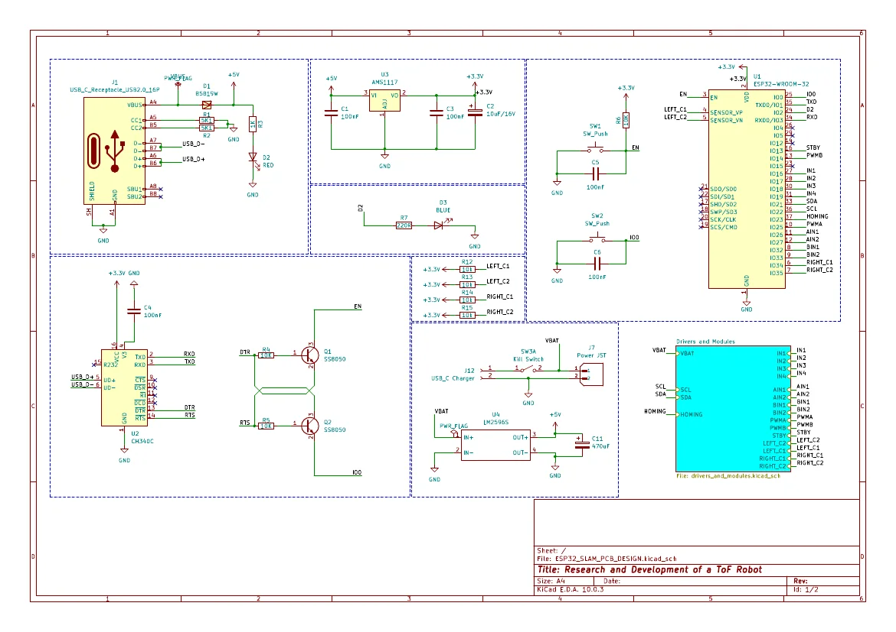

Integrated control
ESP32-WROOM-32 replaces the full development board.
PCB development / Stage 02
A four-layer design proposal that carries the first board's system knowledge into a more integrated controller with onboard ESP32, USB-C programming and structured power distribution.

The implemented board proved the subsystem interfaces, but it still depended on an ESP32 development module and separate driver modules. This second design explored how the controller could become smaller, more structured and closer to a production-ready architecture.
I moved to an ESP32-WROOM-32 module, added USB-C and CH340C programming hardware, integrated onboard 3.3 V and 5 V regulation, and planned dedicated internal planes for power and ground. The result is a design proposal; it was checked in KiCad and through DFM outputs, but was not fabricated as part of the project.
ESP32-WROOM-32 replaces the full development board.
USB-C, CH340C and reset/boot circuitry support direct programming.
Signal routing is separated from internal power and ground planes.
The revised outline reduces unused area while retaining robot connectors.
Board architecture
The board is organized around direct cable access, short local connections and defined power, communications and actuator regions.



Copper layers
Outer layers carry component fan-out and signals. The first internal layer distributes 3.3 V and 5 V, while the second internal layer provides a continuous ground reference.

Primary signal and component routing.
Split +3.3 V and +5 V power regions.

Continuous ground reference plane.

Secondary signal routing and fan-out.
ESP32-WROOM-32 module with local decoupling and boot/reset control.
USB-C receptacle, CH340C USB-to-UART bridge and automatic programming transistors.
LM2596S 5 V conversion, AMS1117 3.3 V regulation, protection diode and bulk capacitors.
TB6612FNG dual DC-motor driver and ULN2003A stepper-driver array.
Connectors for motors, encoders, ToF sensor, IMU, OLED, stepper and homing sensor.
Kill switch, push buttons, status indicators and clearly grouped connector edges.
Schematic
The two-sheet schematic separates processing, USB and regulation from the motor, stepper and robot-interface circuitry.

Open two-sheet schematic PDF ↗Bill of materials
Loading BOM... The table records references, values and footprints from the KiCad project.
| References | Part / value | Qty | Footprint |
|---|